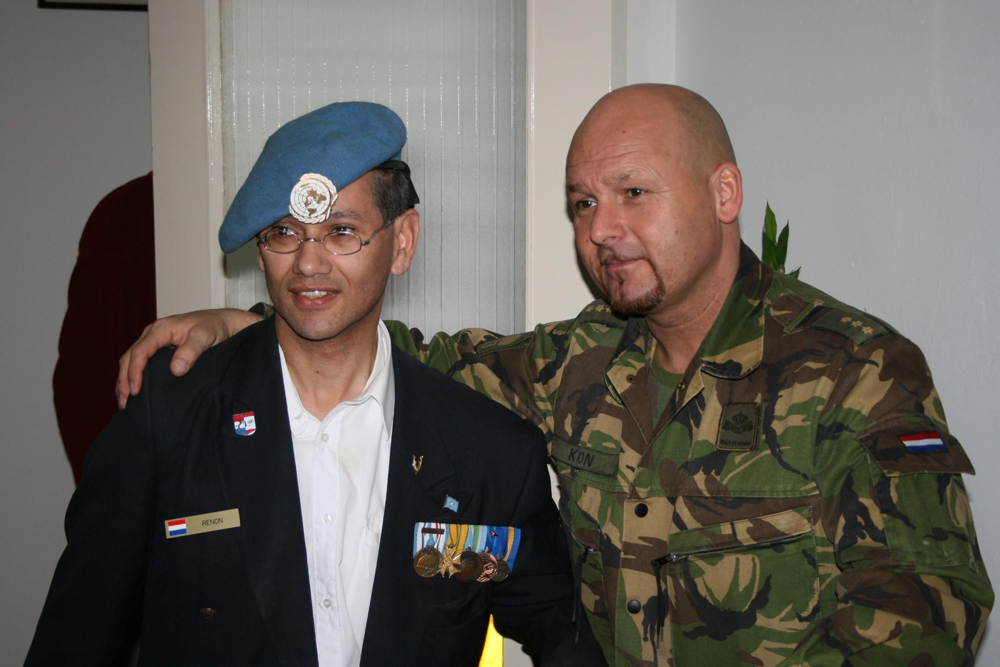

Welkom bij Stichting Veteranen Amsterdam
De Stichting Veteranen Amsterdam (SVA) is een ontmoetingscentrum voor veteranen, hun partner en kinderen uit Amsterdam en omstreken. De stichting is gehuisvest in een oude pastorie dat de naam gekregen heeft van “de Veldpost”. De Veldpost is vrij toegankelijk voor iedere veteraan die de specifieke sfeer en inrichting aanspreekt.

De Stichting doet alles om de veteraan een sfeervolle en laagdrempelige omgeving binnen de Veldpost te bieden. Bij vele veteranen bestaat de behoefte om de kameraden van weleer te ontmoeten als blijk van verwantschap, het delen van herinneringen aan gezamenlijke ervaringen tijdens inzet in operationele missiegebieden.
Wat biedt de stichting binnen de Veldpost nog meer
Een huiskamer- en inloop voorziening. In de huiskamer is – naast gratis koffie en thee, TV, radio, bibliotheek met boeken en tijdschriften en computergames – specifieke informatie aanwezig in de vorm van brochures en folders met betrekking tot regelingen, sociale verbanden, en zorgvoorzieningen voor veteranen.
De organisatie van activiteiten waarbij veteranen en anderen elkaar kunnen ontmoeten en de organisatie van lotgenotencontact (reünies, vergaderingen e.d.).
Maatschappelijke dienstverlening aan alle veteranen. De gastheren, alle veteranenhelpers bieden een luisterend oor en kunnen algemene informatie, advies en ondersteuning geven aan veteranen en/of hun naasten.
Ruimte in de Veldpost voor lezingen, cursussen, informatiedagen, trainingen en sociale activiteiten..